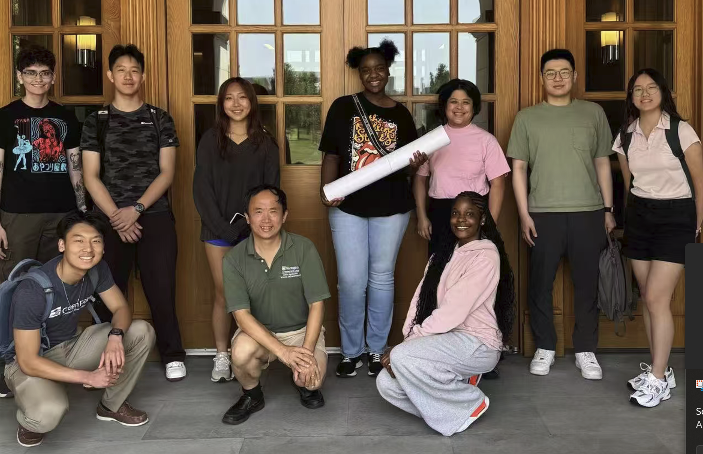
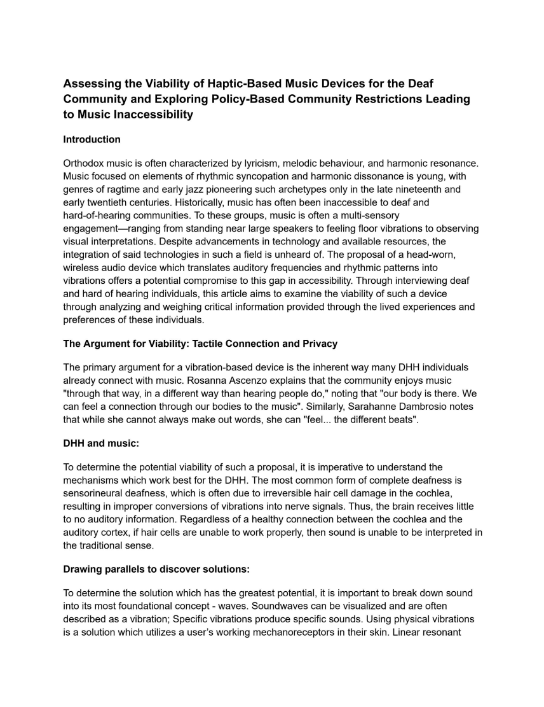

Student Performance
Comparing assessment performance with LLM access against conventional exam resources.
04 / Writing
Education for Chemical Engineers / 2025

Research Methodology
The study examined both how students use generative AI during graduate-level exams and how capable contemporary language models are when solving those same engineering problems.
Our analysis worked across exam questions requiring different forms of reasoning: multiple-choice problems, short responses, numerical calculations, and longer engineering problems.
Student performance with access to LLMs was compared with performance using conventional resources such as textbooks and notes. We also examined how performance changed as students gained more experience working with the tools.
Separately, we benchmarked multiple language models against graduate bioprocess-engineering exam problems. By examining where the models succeeded and where they continued to fail, the research could move from simply asking whether AI was capable to asking how assessment itself should evolve.
Comparing assessment performance with LLM access against conventional exam resources.
Testing contemporary AI systems against graduate-level engineering questions requiring conceptual, numerical, and open-ended reasoning.
Using patterns in model success and failure to identify forms of assessment that still demand deeper human reasoning.
Research / Oral History / Policy
I used recurring themes from those conversations to identify gaps extending beyond individual devices—including institutional practices and government policy.
The paper then considered the viability of vibration-based technologies alongside broader policy and accessibility changes, examining where technology could help and where systemic reform was still necessary.
Read Paper
Conduct consensual interviews and allow lived experiences to define the problems worth investigating.
Compare recurring experiences across interviews and connect individual barriers to larger institutional or policy patterns.
Determine where vibration technology may improve access while recognizing problems that require policy rather than engineering.
Short Story / Grade 10
This short story, written by me in grade 10, was a dark reflection regarding my own fears and dark thoughts regarding death and the fragile nature of human life, after my friend passed away.
Unlike my research writing, where I begin with evidence and work toward a conclusion, fiction gave me space to explore my dark thoughts, without needing a reason to do so.
I submitted the story to Scholastic's writing competition as an attempt to capture the dark truth of human experience, to express my fears regarding death, and to bring awareness to the challenges faced by young people in difficult circumstances.
Read Short Story